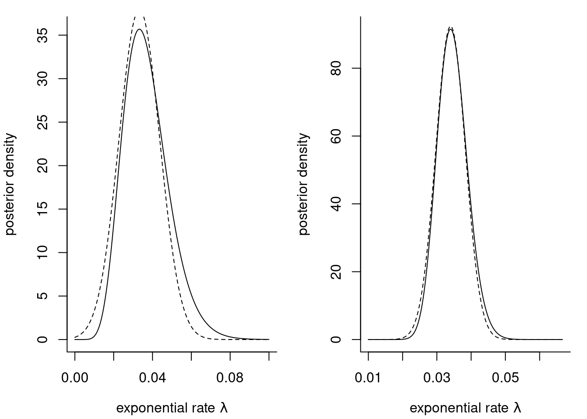
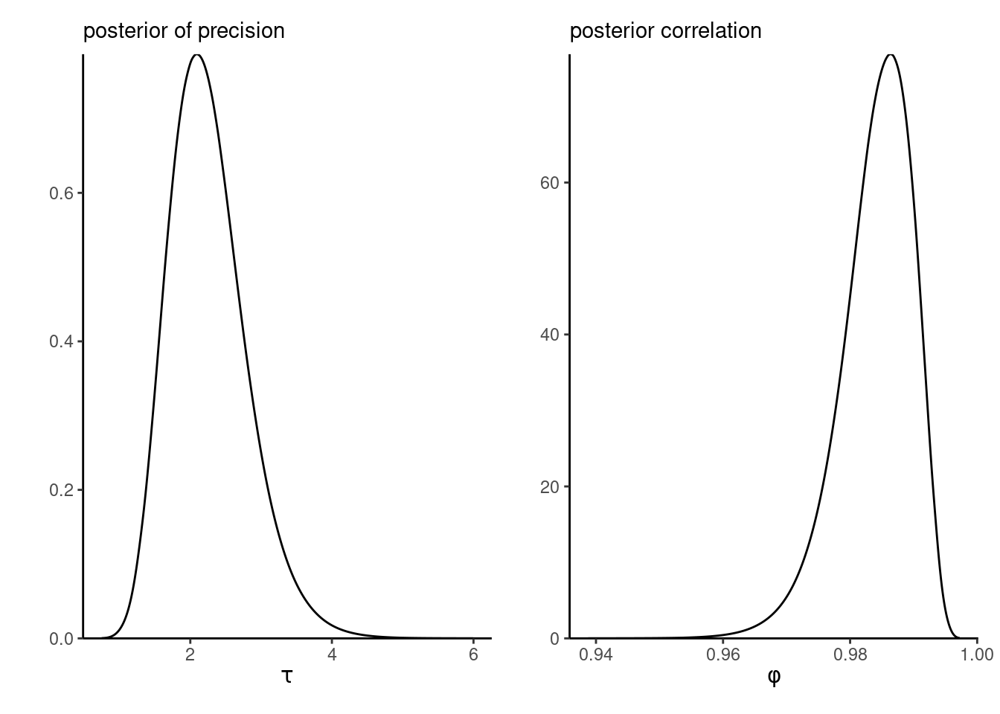
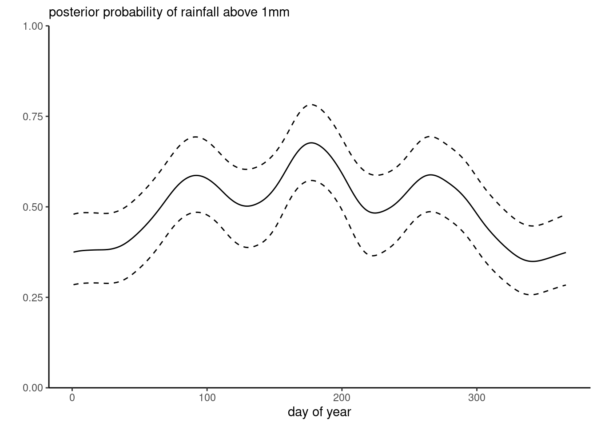

9 Deterministic approximations
So far, we have focused on stochastic approximations of integral. In very large models, Markov chain Monte Carlo suffer from the curse of dimensionality and it is sometimes useful to resort to cheaper approximations. We begin this review by looking at the asymptotic Gaussian limiting distribution of the maximum aposteriori, the Laplace approximations for integrals (Tierney and Kadane 1986), and their applications for model comparison (Raftery 1995) and evaluation of the marginal likelihood. We also discuss integrated nested Laplace approximations (Rue, Martino, and Chopin 2009; Wood 2019), used in hierarchical models with Gaussian components to obtain approximations to the marginal distribution. This material also borrows from Section 8.2 and appendix C.2.2 of Held and Bové (2020).
We make use of Landau’s notation to describe the growth rate of some functions: we write \(x = \mathrm{O}(n)\) (big-O) to indicate that the ratio \(x/n \to c \in \mathbb{R}\) and \(x =\mathrm{o}(n)\) when \(x/n \to 0,\) both when \(n \to \infty.\)
9.1 Laplace approximation and it’s applications
Proposition 9.1 (Laplace approximation for integrals) The Laplace approximation uses a Gaussian approximation to evaluate integrals of the form \[\begin{align*} I_n= \int_a^b g(x) \mathrm{d} x =\int_a^b \exp\{nh(x)\}\mathrm{d} x. \end{align*}\] Assume that \(g(x)\) and thus \(h(x),\) is concave and and twice differentiable, with a maximum at \(x_0 \in [a,b].\) We can Taylor expand \(h(x)\) to get, \[\begin{align*} h(x) = h(x_0) + h'(x_0)(x-x_0) + h''(x_0)(x-x_0)^2/2 + R \end{align*}\] where the remainder \(R=\mathrm{O}\{(x-x_0)^3\}.\) If \(x_0\) is a maximizer and solves \(h'(x_0)=0,\) then letting \(\tau=-nh''(x_0),\) we can write ignoring the remainder term the approximation \[\begin{align*} I_n &\approx \exp\{nh(x_0)\} \int_{a}^b \exp \left\{-\frac{1}{2}(x-x_0)^2\right\} \\&= \exp\{nh(x_0)\} \left(\frac{2\pi}{\tau}\right)^{1/2} \left[\Phi\left\{ \tau(b-x_0)\right\} - \Phi\left\{\tau(a-x_0)\right\}\right] \end{align*}\] upon recovering the unnormalized kernel of a Gaussian random variable centered at \(x_0\) with precision \(\tau.\) The approximation error is \(\mathrm{O}(n^{-1}).\)
The multivariate analog is similar, where now for an integral of the form \(\exp\{nh(\boldsymbol{x})\}\) over a subset of \(\mathbb{R}^d,\) we consider the Taylor series expansion \[\begin{align*} h(\boldsymbol{x}) &= h(\boldsymbol{x}_0) + (\boldsymbol{x}- \boldsymbol{x}_0)^\top h'(\boldsymbol{x}_0) + \frac{1}{2}(\boldsymbol{x}- \boldsymbol{x}_0)^\top h''(\boldsymbol{x}_0)(\boldsymbol{x}- \boldsymbol{x}_0) + R. \end{align*}\] We obtain the Laplace approximation at the mode \(\boldsymbol{x}_0\) satisfying \(h'(\boldsymbol{x}_0)=\boldsymbol{0}_d,\) \[\begin{align*} I_n \approx \left(\frac{2\pi}{n}\right)^{p/2} | \mathbf{H}(\boldsymbol{x}_0)|^{-1/2}\exp\{nh(\boldsymbol{x}_0)\}, \end{align*}\] where \(|\mathbf{H}(\boldsymbol{x}_0)|\) is the determinant of the Hessian matrix of \(-h(\boldsymbol{x})\) evaluated at the mode \(\boldsymbol{x}_0.\)
Laplace approximation uses a Taylor series approximation to approximate the density, but since the latter must be non-negative, it performs the approximation on the log scale and back-transform the result. It is important to understand that we can replace \(nh(\boldsymbol{x})\) by any \(\mathrm{O}(n)\) term.
Corollary 9.1 (Laplace approximation for marginal likelihood) Consider a simple random sample \(\boldsymbol{Y}\) of size \(n\) from a distribution with parameter vector \(\boldsymbol{\theta} \in \mathbb{R}^p.\) We are interested in approximating the marginal likelihood for a parametric model with \(\boldsymbol{\theta} \in \mathbb{R}^d.\) Write (Raftery 1995) \[\begin{align*} p(\boldsymbol{y}) = \int_{\mathbb{R}^d} p(\boldsymbol{y} \mid \boldsymbol{\theta}) p(\boldsymbol{\theta}) \mathrm{d} \boldsymbol{\theta} \end{align*}\] and take \[\begin{align*}nh(\boldsymbol{\theta}) = \log p(\boldsymbol{y} \mid \boldsymbol{\theta}) + \log p(\boldsymbol{\theta}) \end{align*}\] in Proposition 9.1. Then, evaluating at the maximum a posteriori \(\widehat{\boldsymbol{\theta}}_{\mathrm{MAP}},\) we get \[\begin{align*} p(\boldsymbol{y}) = p(\widehat{\boldsymbol{\theta}}_{\mathrm{MAP}})p(\boldsymbol{y} \mid \widehat{\boldsymbol{\theta}}_{\mathrm{MAP}}) (2\pi)^{d/2}|\mathbf{H}(\widehat{\boldsymbol{\theta}}_{\mathrm{MAP}})|^{-1/2} + \mathrm{O}(n^{-1}) \end{align*}\] where \(-\mathbf{H}\) is the Hessian matrix of second partial derivatives of the unnormalized log posterior. We get the same relationship on the log scale, whence (Tierney and Kadane 1986) \[\begin{align*} \log p(\boldsymbol{y}) = \log p(\widehat{\boldsymbol{\theta}}_{\mathrm{MAP}}) + \log p(\boldsymbol{y} \mid \widehat{\boldsymbol{\theta}}_{\mathrm{MAP}}) + \frac{d}{2} \log (2\pi) - \frac{1}{2}\log |\mathbf{H}(\widehat{\boldsymbol{\theta}}_{\mathrm{MAP}})| + \mathrm{O}(n^{-1}) \end{align*}\] If \(p(\boldsymbol{\theta}) = \mathrm{O}(1)\) and \(p(\boldsymbol{y} \mid \boldsymbol{\theta}) = \mathrm{O}(n)\) and provided the prior does not impose unnecessary support constraints, we get the same limiting approximation if we replace the maximum a posteriori point estimator \(\widehat{\boldsymbol{\theta}}_{\mathrm{MAP}}\) by the maximum likelihood estimator, and \(-\mathbf{H}(\widehat{\boldsymbol{\theta}}_{\mathrm{MAP}})\) by \(n\boldsymbol{\imath},\) where \(\boldsymbol{\imath}\) denotes the Fisher information matrix for a sample of size one. We can write the determinant of the \(n\)-sample Fisher information as \(n^{d}|\boldsymbol{\imath}|.\)
If we use this approximation instead, we get \[\begin{align*} \log p(\boldsymbol{y}) &= \log p(\boldsymbol{y} \mid \widehat{\boldsymbol{\theta}}_{\mathrm{MLE}}) -\frac{d}{2} \log n + \\& \quad \log p(\widehat{\boldsymbol{\theta}}_{\mathrm{MLE}}) - \frac{1}{2} \log |\boldsymbol{\imath}| + \frac{d}{2} \log(2\pi) + \mathrm{O}(n^{-1/2}) \end{align*}\] where the error is now \(\mathrm{O}(n^{-1/2})\) due to replacing the true information by the evaluation at the MLE. The likelihood is \(\mathrm{O}(n),\) the second is \(\mathrm{O}(\log n)\) and the other three are \(\mathrm{O}(1).\) If we take the prior to be a multivariate Gaussian with mean \(\boldsymbol{\theta}_{\mathrm{MLE}}\) and with variance \(\boldsymbol{\imath},\) then the approximation error is \(\mathrm{O}(n^{-1/2}),\) whereas the marginal likelihood has error \(\mathrm{O}(1)\) if we only keep the first two terms. This gives the approximation \[\begin{align*} -2\log p(\boldsymbol{y}) \approx \mathsf{BIC} = -2\log p(\boldsymbol{y} \mid \boldsymbol{\theta}) + p\log n \end{align*}\] If the likelihood contribution dominates the posterior, the \(\mathsf{BIC}\) approximation will improve with increasing sample size, so \(\exp(-\mathsf{BIC}/2)\) is an approximation fo the marginal likelihood sometimes used for model comparison in Bayes factor, although this derivation shows that the latter neglects the impact of the prior.
Example 9.1 (Bayesian model averaging approximation) Consider the diabetes model from Park and Casella (2008). We fit various linear regression models, considering all best models of a certain type with at most the 10 predictors plus the intercept. In practice, we typically restrict attention to models within some distance of the lowest BIC value, as the weights otherwise will be negligible.
Most of the weight is on a handful of complex models, where the best fitting model only has around \(30\)% of the posterior mass.
Remark 9.1 (Parametrization for Laplace). Compare to sampling-based methods, the Laplace approximation requires optimization to find the maximum of the function. The Laplace approximation is not invariant to reparametrization: in practice, it is best to perform it on a scale where the likelihood is as close to quadratic as possible in \(g(\boldsymbol{\theta})\) and back-transform using a change of variable.
We can also use Laplace approximation to obtain a crude second-order approximation to the posterior. We suppose that the prior is proper.
We can Taylor expand the log prior and log density around their respective mode, say \(\widehat{\boldsymbol{\theta}}_0\) and \(\widehat{\boldsymbol{\theta}}_{\mathrm{MLE}},\) with \(\jmath_0(\widehat{\boldsymbol{\theta}}_0)\) and \(\jmath(\widehat{\boldsymbol{\theta}}_{\mathrm{MLE}})\) denoting negative of the corresponding Hessian matrices evaluated at their mode, meaning the observed information matrix for the likelihood component. Together, these yield \[\begin{align*} \log p(\boldsymbol{\theta}) &\approx \log p(\widehat{\boldsymbol{\theta}}_0) - \frac{1}{2}(\boldsymbol{\theta} - \widehat{\boldsymbol{\theta}}_0)^\top\jmath_0(\widehat{\boldsymbol{\theta}}_0)(\boldsymbol{\theta} - \widehat{\boldsymbol{\theta}}_0)\\ \log p(\boldsymbol{y} \mid \boldsymbol{\theta}) &\approx \log p(\boldsymbol{y} \mid \widehat{\boldsymbol{\theta}}_{\mathrm{MLE}}) - \frac{1}{2}(\boldsymbol{\theta} - \widehat{\boldsymbol{\theta}}_{\mathrm{MLE}})^\top\jmath(\widehat{\boldsymbol{\theta}}_{\mathrm{MLE}})(\boldsymbol{\theta} - \widehat{\boldsymbol{\theta}}_{\mathrm{MLE}}) \end{align*}\]
In the case of flat prior, the curvature is zero and the prior contribution vanishes altogether. If we apply now Proposition 8.1 to this unnormalized kernel, we get that the approximate posterior must be Gaussian with precision \(\jmath_n^{-1}\) and mean \(\mu_n,\) where \[\begin{align*} \jmath_n &= \jmath_0(\widehat{\boldsymbol{\theta}}_{0}) + \jmath(\widehat{\boldsymbol{\theta}}_{\mathrm{MLE}})\\ \widehat{\boldsymbol{\theta}}_n &= \jmath_n^{-1}\left\{ \jmath_0(\widehat{\boldsymbol{\theta}}_{0})\widehat{\boldsymbol{\theta}}_{0} + \jmath(\widehat{\boldsymbol{\theta}}_{\mathrm{MLE}})\widehat{\boldsymbol{\theta}}_{\mathrm{MLE}}\right\} \end{align*}\] and note that \(\jmath_0(\widehat{\boldsymbol{\theta}}_{0}) = \mathrm{O}(1),\) whereas \(\jmath_n\) is \(\mathrm{O}(n).\)
Theorem 9.1 (Bernstein-von Mises theorem) Consider any estimator asymptotically equivalent to the maximum likelihood estimator and suppose that the prior is continuous and positive in a neighborhood of the maximum. Assume further that the regularity conditions for maximum likelihood estimator holds. Then, in the limit as \(n \to \infty\) \[\begin{align*} \boldsymbol{\theta} \mid \boldsymbol{y} \stackrel{\cdot}{\sim} \mathsf{Gauss}\{ \widehat{\boldsymbol{\theta}}_{\mathrm{MLE}}, \jmath^{-1}(\widehat{\boldsymbol{\theta}}_{\mathrm{MLE}})\} \end{align*}\]
The conclusions from this result is that, in large samples, the inference obtained from using likelihood-based inference and Bayesian methods will be equivalent: credible intervals will also have guaranteed frequentist coverage.
We can use the statement by replacing the maximum likelihood estimator and the observed information matrix with variants thereof (\(\boldsymbol{\theta}_n\) and \(\jmath_n,\) or the Fisher information, or any Monte Carlo estimate of the posterior mean and covariance). The differences will be noticeable for small samples, but will vanish as \(n\) grows.
Example 9.2 (Gaussian approximations to the posterior) To assess the performance of Laplace approximation, we consider an exponential likelihood \(Y_i \mid \lambda \sim \mathsf{expo}(\lambda)\) with conjugate gamma prior \(\lambda \sim \mathsf{gamma}(a,b)\). The exponential model has information \(i(\lambda)=n/\lambda^2\) and the mode of the posterior is \[\widehat{\lambda}_{\mathrm{MAP}}=\frac{n+a-1}{\sum_{i=1}^n y_i + b}.\]

waiting dataset with an exponential likelihood and a gamma prior with \(a=0.01\) and \(b=0.01.\) The plots are based on the first \(10\) observations (left) and the whole sample of size \(n=62\) (right).
Let us now use Laplace approximation to obtain an estimate of the marginal likelihood: the latter is \[\begin{align*} p(\boldsymbol{y}) = \frac{\Gamma(n+a)}{\Gamma(a)}\frac{b^a}{\left(b + \sum_{i=1}^n y_i \right)^{n+a}}. \end{align*}\]
For the sample of size \(62,\) the exponential model marginal likelihood is \(-276.5,\) whereas the Laplace approximation gives \(-281.9.\)
Proposition 9.2 (Posterior expectation using Laplace method) If we are interested in computing the posterior expectation of a positive real-valued functional \(g(\boldsymbol{\theta}): \mathbb{R}^d \to \mathbb{R}_{+},\) we may write \[\begin{align*} \mathsf{E}_{\boldsymbol{\Theta} \mid \boldsymbol{Y}}(g(\boldsymbol{\theta}) \mid \boldsymbol{y}) &= \frac{\int g(\boldsymbol{\theta}) p(\boldsymbol{y} \mid \boldsymbol{\theta}) p( \boldsymbol{\theta}) \mathrm{d} \boldsymbol{\theta}}{\int p(\boldsymbol{y} \mid \boldsymbol{\theta})p( \boldsymbol{\theta}) \mathrm{d} \boldsymbol{\theta}} \end{align*}\] We can apply Laplace’s method to both numerator and denominator. Let \(\widehat{\boldsymbol{\theta}}_g\) and \(\widehat{\boldsymbol{\theta}}_{\mathrm{MAP}}\) of the integrand of the numerator and denominator, respectively, and the negative of the Hessian matrix of the log integrands \[\begin{align*} \jmath_g&= -\frac{\partial^2}{\partial \boldsymbol{\theta}\partial \boldsymbol{\theta}^\top} \left\{ \log g(\boldsymbol{\theta}) + \log p(\boldsymbol{y} \mid \boldsymbol{\theta}) + \log p(\boldsymbol{\theta})\right\}, \\ \jmath &= -\frac{\partial^2}{\partial \boldsymbol{\theta}\partial \boldsymbol{\theta}^\top} \left\{\log p(\boldsymbol{y} \mid \boldsymbol{\theta}) + \log p(\boldsymbol{\theta})\right\}. \end{align*}\] Putting these together \[\begin{align*} \mathsf{E}_{\boldsymbol{\Theta} \mid \boldsymbol{Y}}(g(\boldsymbol{\theta}) \mid \boldsymbol{y}) = \frac{|\jmath(\widehat{\boldsymbol{\theta}}_{\mathrm{MAP}})|^{1/2}}{|\jmath_g(\widehat{\boldsymbol{\theta}}_g)|^{1/2}} \frac{g(\widehat{\boldsymbol{\theta}}_g) p(\boldsymbol{y} \mid \widehat{\boldsymbol{\theta}}_g) p( \widehat{\boldsymbol{\theta}}_g)}{p(\boldsymbol{y} \mid \widehat{\boldsymbol{\theta}}_{\mathrm{MAP}}) p(\widehat{\boldsymbol{\theta}}_{\mathrm{MAP}})} + \mathrm{O}(n^{-2}) \end{align*}\] While the Laplace method has an error \(\mathrm{O}(n^{-1}),\) the leading order term of the expansion cancel out from the ratio.
Example 9.3 (Posterior mean for the exponential likelihood) Consider the posterior mean \(\mathsf{E}_{\Lambda \mid \boldsymbol{Y}}(\lambda)\) for the model of Example 9.2. Let \(s=\sum_{i=1}^n y_i\). Then, \[\begin{align*} \widehat{\lambda}_g &= \frac{(n+a)}{s + b} \\ |\jmath_g(\widehat{\lambda}_g)|^{1/2} &= \left(\frac{n+a}{\widehat{\lambda}_g^2}\right)^{1/2} = \frac{s + b}{(n+a)^{1/2}} \end{align*}\]
Simplification gives the approximation \[\begin{align*} \widehat{\mathsf{E}}_{\Lambda \mid \boldsymbol{Y}}(\Lambda) \approx \frac{\exp(-1)}{s + b} \frac{(n+a)^{n+a+1/2}}{(n+a-1)^{n+a-1/2}} \end{align*}\] which gives \(0.03457,\) whereas the true posterior mean is \((n+a)/(s+b) = 0.03457.\) The Laplace approximation is equal to the true value up to five significant digits.
9.2 Integrated nested Laplace approximation
In many high dimensional models, use of MCMC is prohibitively expensive and fast, yet accurate calculations are important. One class of models whose special structure is particularly amenable to deterministic approximations.
Consider a model with response \(\boldsymbol{y}\) which depends on covariates \(\mathbf{x}\) through a latent Gaussian process; typically the priors on the coefficients \(\boldsymbol{\beta} \in \mathbb{R}^p.\) In applications with splines, or space time processes, the prior precision matrix for \(\boldsymbol{\beta}\) will be sparse with a Gaussian Markov random field structure. The dimension \(p\) can be substantial (several thousands) with a comparably low-dimensional hyperparameter vector \(\boldsymbol{\theta} \in \mathbb{R}^m.\) Interest typically then lies in marginal parameters \[\begin{align*} p(\beta_i \mid \boldsymbol{y}) &= \int p(\beta_i \mid \boldsymbol{\theta}, \boldsymbol{y}) p(\boldsymbol{\theta} \mid \boldsymbol{y}) \mathrm{d} \boldsymbol{\theta}\\ p(\theta_i \mid \boldsymbol{y}) &= \int p(\boldsymbol{\theta} \mid \boldsymbol{y}) \mathrm{d} \boldsymbol{\theta}_{-i} \end{align*}\] where \(\boldsymbol{\theta}_{-i}\) denotes the vector of hyperparameters excluding the \(i\)th element \(\theta_i.\) The INLA method builds Laplace approximations to the integrands \(p(\beta_i \mid \boldsymbol{\theta}, \boldsymbol{y})\) and \(p(\boldsymbol{\theta} \mid \boldsymbol{y}),\) and evaluates the integral using quadrature rules over a coarse grid of values of \(\boldsymbol{\theta}.\)
The marginal posterior \(p(\boldsymbol{\theta} \mid \boldsymbol{y})\) is approximated by writing \(p(\boldsymbol{\beta}, \boldsymbol{\theta} \mid \boldsymbol{y}) \propto p(\boldsymbol{\beta} \mid \boldsymbol{\theta}, \boldsymbol{y}) p(\boldsymbol{\theta} \mid \boldsymbol{y})\) and performing a Laplace approximation for fixed value of \(\boldsymbol{\theta}\) for the term \(p(\boldsymbol{\beta} \mid \boldsymbol{\theta}, \boldsymbol{y}),\) whose mode we denote by \(\widehat{\boldsymbol{\beta}}.\) This yields \[\begin{align*} \widetilde{p}(\boldsymbol{\theta} \mid \boldsymbol{y}) \propto \frac{p(\widehat{\boldsymbol{\beta}}, \boldsymbol{\theta} \mid \boldsymbol{y})}{ p_{G}(\widehat{\boldsymbol{\beta}} \mid \boldsymbol{y}, \boldsymbol{\theta})} = \frac{p(\widehat{\boldsymbol{\beta}}, \boldsymbol{\theta} \mid \boldsymbol{y})}{ |\mathbf{H}(\widehat{\boldsymbol{\beta}})|^{1/2}} \end{align*}\] and the Laplace approximation has kernel \[p_{G}(\boldsymbol{\beta} \mid \boldsymbol{y}, \boldsymbol{\theta}) \propto |\mathbf{H}(\widehat{\boldsymbol{\beta}})|^{1/2}\exp\{-(\boldsymbol{\beta}- \widehat{\boldsymbol{\beta}})^\top \mathbf{H}(\widehat{\boldsymbol{\beta}})(\boldsymbol{\beta}- \widehat{\boldsymbol{\beta}})/2\};\] since it is evaluated at \(\widehat{\boldsymbol{\beta}},\) we retrieve only the determinant of the negative Hessian of \(p(\boldsymbol{\beta} \mid \boldsymbol{\theta}, \boldsymbol{y}),\) namely \(\mathbf{H}(\widehat{\boldsymbol{\beta}}).\) Note that the latter is a function of \(\boldsymbol{\theta}.\)
To obtain \(p(\theta_i \mid \boldsymbol{y})\), we then proceed with
- finding the mode of \(\widetilde{p}(\boldsymbol{\theta} \mid \boldsymbol{y})\) using a Newton’s method, approximating the gradient and Hessian via finite differences.
- Compute the negative Hessian at the mode to get an approximation to the covariance of \(\boldsymbol{\theta}.\) Use an eigendecomposition to get the principal directions \(\boldsymbol{z}\).
- In each direction of \(\boldsymbol{z}\), consider drops in \(\widetilde{p}(\boldsymbol{\theta} \mid \boldsymbol{y})\) as we move away from the mode and define a coarse grid based on these, keeping points where the difference in \(\widetilde{p}(\boldsymbol{\theta} \mid \boldsymbol{y})\) relative to the mode is less than some numerical tolerance \(\delta.\)
- Retrieve the marginal by numerical integration using the central composition design outline above. We can also use directly avoid the integration and use the approximation at the posterior mode of \(\widetilde{p}(\boldsymbol{\theta} \mid \boldsymbol{y}).\)
To approximate \(p(\beta_i \mid \boldsymbol{y})\), Rue, Martino, and Chopin (2009) proceed instead by building an approximation of it based on maximizing \(\boldsymbol{\beta}_{-i} \mid \beta_i, \boldsymbol{\theta}, \boldsymbol{y}\) to yield \(\widehat{\boldsymbol{\beta}}_{(i)}\) whose \(i\)th element is \(\beta_i,\) yielding \[\begin{align*} \widetilde{p}(\beta_i \mid \boldsymbol{\theta}, \boldsymbol{y}) \propto \frac{p(\widehat{\boldsymbol{\beta}}_{(i)}, \boldsymbol{\theta} \mid \boldsymbol{y})}{\widetilde{p}(\widehat{\boldsymbol{\beta}}_{(i),-i} \mid \beta_i, \boldsymbol{\theta}, \boldsymbol{y})}, \end{align*}\] with a suitable renormalization of \(\widetilde{p}(\widehat{\boldsymbol{\beta}}_{(i),-i} \mid \beta_i, \boldsymbol{\theta}, \boldsymbol{y}).\) Such approximations are reminiscent of profile likelihood.
While we could use the Laplace approximation \(p_{G}(\widehat{\boldsymbol{\beta}} \mid \boldsymbol{y}, \boldsymbol{\theta})\) and marginalize the latter directly, this leads to evaluation of the Laplace approximation to the density far from the mode, which is often inaccurate. One challenge is that \(p\) is often very large, so calculation of the Hessian \(\mathbf{H}\) is costly to evaluate. Having to evaluate it repeatedly for each marginal \(\beta_i\) for \(i=1, \ldots, p\) is prohibitive since it involves factorizations of \(p \times p\) matrices.
To reduce the computational costs, Rue, Martino, and Chopin (2009) propose to use the approximate mean to avoid optimizing and consider the conditional based on the conditional of the Gaussian approximation with mean \(\widehat{\boldsymbol{\beta}}\) and covariance \(\boldsymbol{\Sigma} = \mathbf{H}^{-1}(\widehat{\boldsymbol{\beta}}),\) \[\begin{align*} \boldsymbol{\beta}_{-i} \mid \beta_i, \boldsymbol{\theta}, \boldsymbol{y} \approx \mathsf{Gauss}_{p-1}\left\{\widetilde{\boldsymbol{\beta}}_{(i)} = \widehat{\boldsymbol{\beta}}_{-i} + \boldsymbol{\Sigma}_{i,i}^{-1}\boldsymbol{\Sigma}_{i,-i}(\beta_i - \widehat{\beta}_i, \mathbf{M}^{-1}_{-i,-i}\right\}; \end{align*}\] cf. Proposition 1.6. This only requires a rank-one update. Wood (2019) suggest to use a Newton step to correct \(\widetilde{\boldsymbol{\beta}}_{(i)},\) starting from the conditional mean. The second step is to exploit the local dependence on \(\boldsymbol{\beta}\) using the Markov structure to build an improvement to the Hessian. Further improvements are proposed in Rue, Martino, and Chopin (2009), who used a simplified Laplace approximation to correct the Gaussian approximation for location and skewness, a necessary step when the likelihood itself is not Gaussian. This leads to a Taylor series approximation to correct the log determinant of the Hessian matrix. Wood (2019) consider a BFGS update to \(\mathbf{M}^{-1}_{-i,-i}\) directly, which works less well than the Taylor expansion near \(\widehat{\beta}_i\), but improves upon when we move far from this value. Nowadays, the INLA software uses a low-rank variational correction to Laplace method, proposed in van Niekerk and Rue (2024).
The INLA R package provides an interface to fit models with Gaussian latent random effects. While the software is particularly popular for spatio-temporal applications using the SPDE approach, we revisit two examples in the sequel where we can exploit the Markov structure.
Example 9.4 (Stochastic volatility model with INLA) Financial returns \(Y_t\) typically exhibit time-varying variability. The stochastic volatility model is a parameter-driven model that specifies \[\begin{align*}
Y_t &= \exp(h_t/2) Z_t \\
h_t &= \gamma + \phi (h_{t-1} - \gamma) + \sigma U_t
\end{align*}\] where \(U_t \stackrel{\mathrm{iid}}{\sim} \mathsf{Gauss}(0,1)\) and \(Z_t \sim \stackrel{\mathrm{iid}}{\sim} \mathsf{Gauss}(0,1).\) The INLA documentation provides information about which default prior and hyperparameters are specified. We use a \(\mathsf{gamma}(1, 0.001)\) prior for the precision.
library(INLA)
# Stochastic volatility model
data(exchangerate, package = "hecbayes")
# Compute response from raw spot exchange rates at noon
y <- 100*diff(log(exchangerate$rate))
# 'y' is now a series of percentage of log daily differences
time <- seq_along(y)
data <- data.frame(y = y, time = time)
# Stochastic volatility model
# https://inla.r-inla-download.org/r-inla.org/doc/likelihood/stochvolgaussian.pdf
# The model uses a log link, and a (log)-gamma prior for the precision
f_stochvol <- formula(y ~ f(time, model = "ar1", param = list(prec = c(1, 0.001))))
mod_stochvol <- inla(f_stochvol, family = "stochvol", data = data)
# Obtain summary
summary <- summary(mod_stochvol)
# plot(mod_stochvol)
marg_prec <- mod_stochvol$marginals.hyperpar[[1]]
marg_phi <- mod_stochvol$marginals.hyperpar[[2]]

Figure 9.3 shows that the correlation \(\phi\) is nearly one, leading to random walk behaviour and high persistence over time (this is also due to the frequency of observations). This strong serial dependence in the variance is in part responsible for the difficulty in fitting this model using MCMC.
We can use the marginal density approximations to obtain quantiles for summary of interest. The software also includes utilities to transform the parameters using the change of variable formula.
# Compute density, quantiles, etc. via inla.*marginal
## approximate 95% credible interval and marginal post median
INLA::inla.qmarginal(marg_phi, p = c(0.025, 0.5, 0.975))[1] 0.9874672 0.9929791 0.9963883# Change of variable to get variance from precision
marg_var <- INLA::inla.tmarginal(
fun = function(x) { 1 / x },
marginal = marg_prec)
INLA::inla.qmarginal(marg_var, p = c(0.025, 0.975))[1] 0.1727294 0.4049273# Posterior marginal mean and variance of phi
mom1 <- INLA::inla.emarginal(
fun = function(x){x},
marginal = marg_phi)
mom2 <- INLA::inla.emarginal(
fun = function(x){x^2},
marginal = marg_phi)
c(mean = mom1, sd = sqrt(mom2 - mom1^2)) mean sd
0.992721399 0.002303182 Example 9.5 (Tokyo binomial time series) We revisit Example 7.3, but this time fit the model with INLA. We specify the mean model without intercept and fit a logistic regression, with a second-order cyclic random walk prior for the coefficients, and the default priors for the other parameters.
data(Tokyo, package = "INLA")
# Formula (removing intercept)
formula <- y ~ f(time, model = "rw2", cyclic = TRUE) - 1
mod <- INLA::inla(
formula = formula,
family = "binomial",
Ntrials = n,
data = Tokyo)

Figure 9.4 shows posterior summaries for the \(\boldsymbol{\beta},\) which align with the results for the probit model.
If we wanted to obtain predictions, we need to augment the model matrix and set missing values for the response variable. These then get imputed alongside with the other parameters.